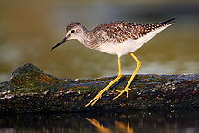
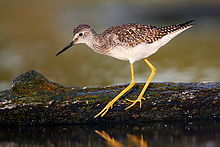

| Lesser Yellowlegs | |
|---|---|
|  | |
| Conservation status | |
| Binomial name | |
| Tringa flavipes (Gmelin, 1789) |
|
| Synonyms | |
|
Totanus flavipes |
| Lesser Yellowlegs | |
|---|---|
|  | |
| Conservation status | |
| Binomial name | |
| Tringa flavipes (Gmelin, 1789) |
|
| Synonyms | |
|
Totanus flavipes |
The Lesser Yellowlegs (Tringa flavipes) is a medium-sized shorebird similar in appearance to the larger Greater Yellowlegs. It is not closely related to this bird, however, but instead to the much larger and quite dissimilar Willet;[2] merely the fine, clear and dense pattern of the neck shown in breeding plumage indicates these species' actual relationships.
Their breeding habitat is clearings near ponds in the boreal forest region from Alaska to Quebec. They nest on the ground, usually in open dry locations.
They migrate to the Gulf coast of the United States and south to South America.
This species is a regular vagrant to western Europe, and the odd bird has wintered in Great Britain.
These birds forage in shallow water, sometimes using their bill to stir up the water. They mainly eat insects, small fish and crustaceans.
The call of this bird is softer than that of the Greater Yellowlegs.

{kind=link}
{kind=link}
{kind=link}